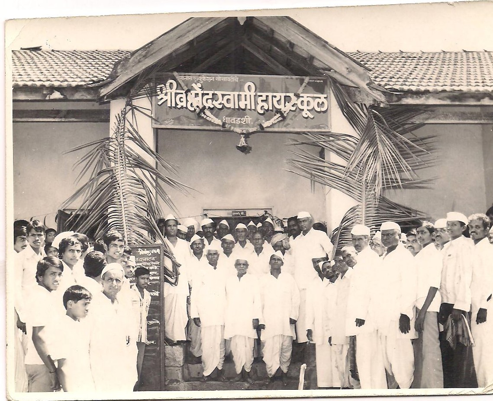
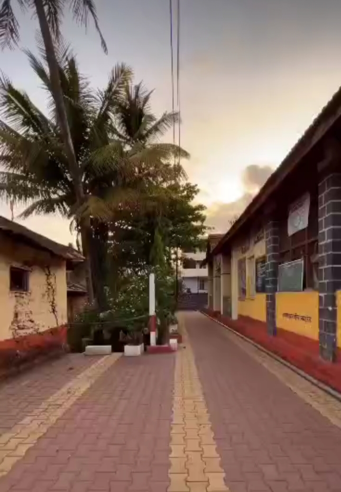

Brahmendraswami High School was founded in 1983 against the backdrop of extreme rural poverty in Dhavdashi, a remote village in Satara district, Maharashtra. The village, being entirely dependent on seasonal rain-fed agriculture, offered no alternative sources of income to its residents. Education was a distant dream for many children due to financial hardship and lack of access. Recognizing this need, the school was established with the vision to provide free education to the children of this underserved community. From the beginning, the mission was clear — quality education at no cost to ensure that poverty does not become a barrier to learning. With the help of numerous benevolent donors and the support of society, the school gradually developed its infrastructure. Managed by the charitable trust 'Brahmendraswami Seva Mandal', the school has consistently worked toward uplifting rural students through education. Over the decades, the school has empowered many students who have gone on to become engineers, doctors, lawyers, and defenders of the nation serving in the military — a testament to the school's transformative role in the community.
Back Page